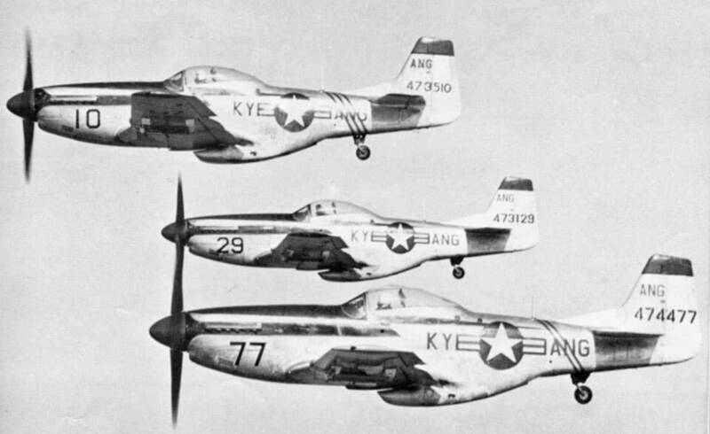

Mantell incident
Franklin, Kentucky, 1948

Air National Guard Capt. Thomas Mantell died chasing a large object. It was later attributed to a classified Skyhook balloon. 1
Open in the interactive Watcher
Related
- Capt. Thomas Mantell died chasing a UFO Claim
- Thomas Mantell Person
Sources
- Mantell UFO incident Wikipedia